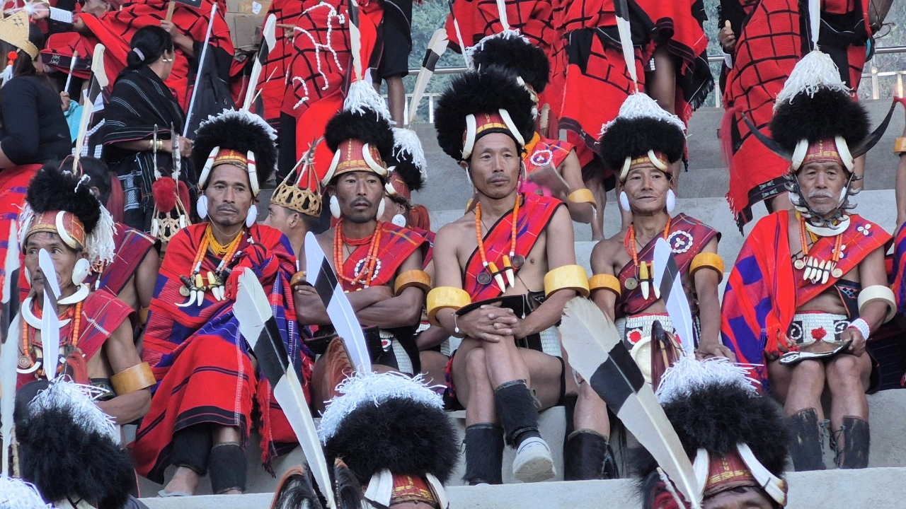
Fixed DepartureThe Hornbill Express
A fixed departure cycling route from Shillong to Kohima, usually accessed through Guwahati in Assam.
View tourDestination · Assam
Brahmaputra river country, tea gardens, wildlife reserves, wetlands, village roads and living cultures across the heart of the Northeast.
Why Assam
Assam tours often begin as a gateway into Northeast India, but the state is much more than an arrival point. The Brahmaputra Valley holds wildlife landscapes, tea country, river islands, villages, wetlands, forest edges and a deep mix of communities shaped by the river.
Our Assam holidays can be gentle or active: cycling through village roads, walking in forest and tea landscapes, exploring river life, visiting national parks, spending time with local hosts, or combining Assam with Meghalaya and Arunachal Pradesh.
It is one of the best places in the region for travellers who want variety without rushing: wildlife in the morning, tea country by afternoon, river crossings, food, craft, culture and slow rural roads in between.
Assam journeys

Fixed DepartureA fixed departure cycling route from Shillong to Kohima, usually accessed through Guwahati in Assam.
View tour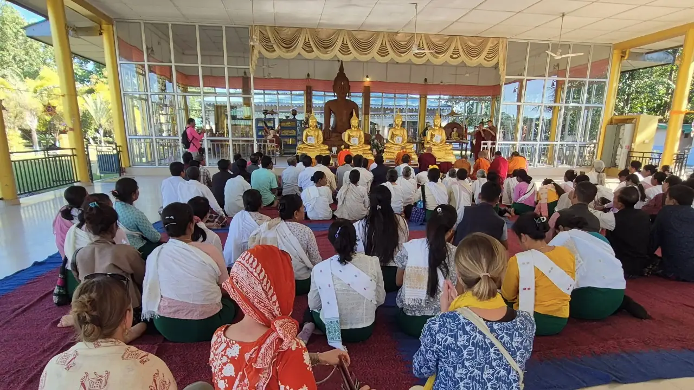
Nature & Culture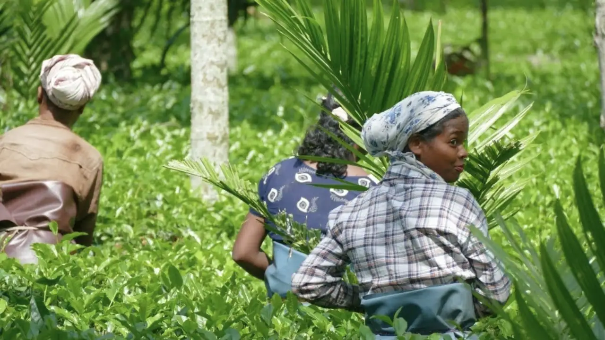
Nature & Culture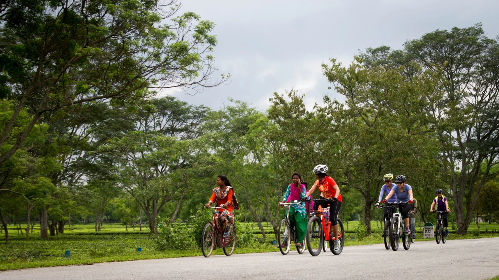
CyclingThe Brahmaputra Explorer: cycling through village roads, river country, tea landscapes and local communities.
View tour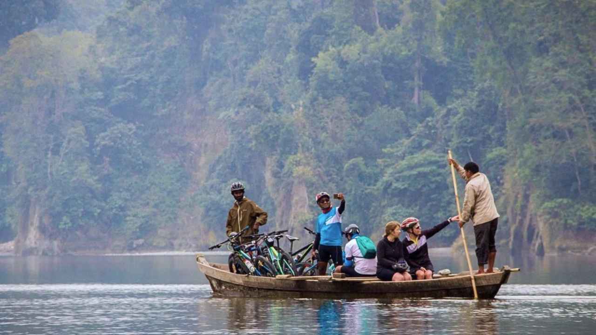
CyclingA cycling route linking Upper Assam's tea country with eastern Arunachal's river valleys and hill roads.
View tour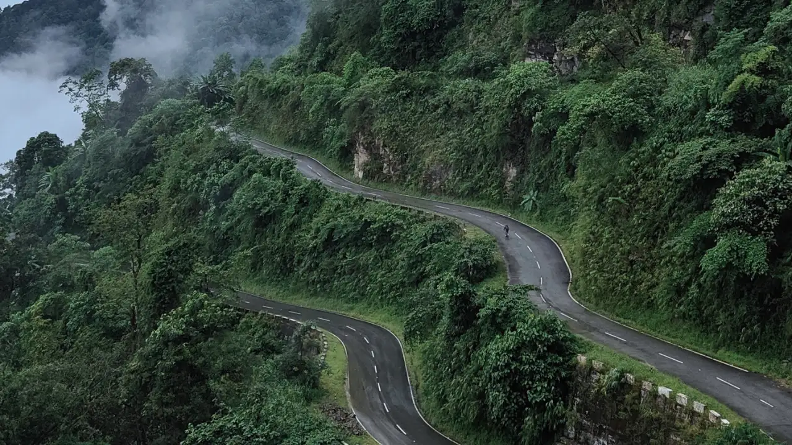
CyclingA western Arunachal cycling journey that begins and ends through Assam's Brahmaputra Valley gateway.
View tour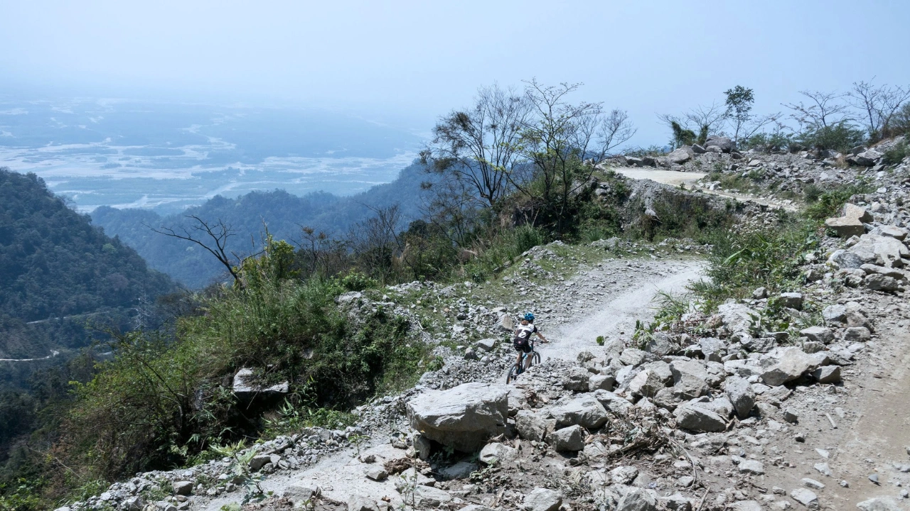
CyclingRide from Upper Assam into the forested mountain roads and remote valleys of eastern Arunachal.
View tour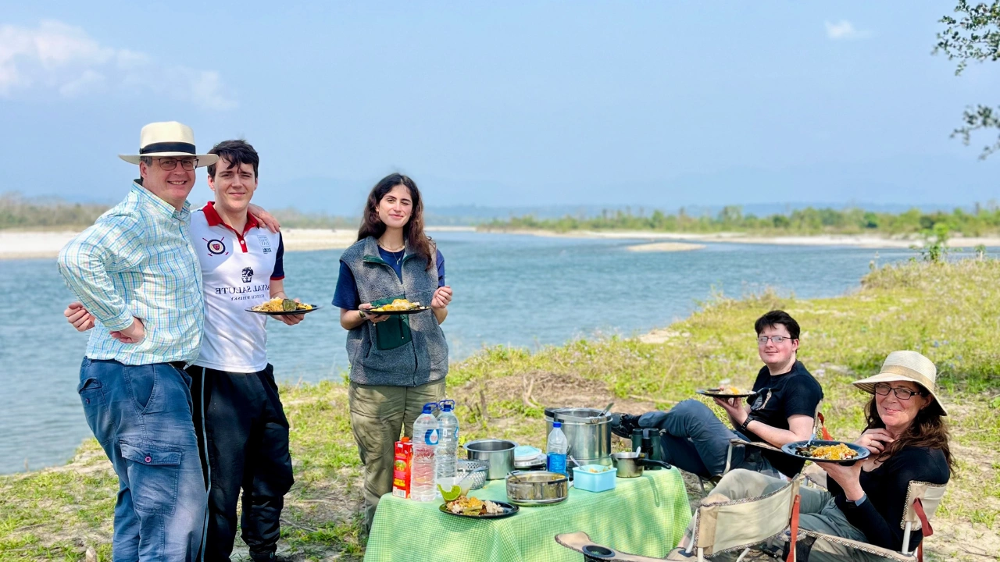
FamilyA gentle family route through wildlife, tea, river life and slower rural days.
View tour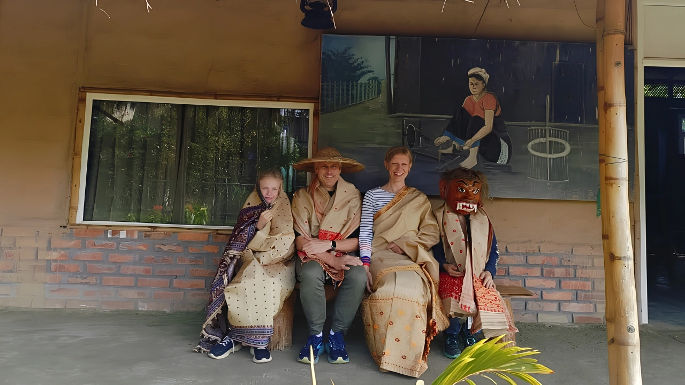
FamilyA family route combining Meghalaya's hills, caves and waterfalls with Assam's wildlife and tea country.
View tour Family
Family
A family-paced route from Assam's foothills into western Arunachal's villages, monasteries and mountain roads.
View tour Family
Family
A family adventure beginning in Upper Assam and moving into eastern Arunachal's rivers, forests and living cultures.
View tour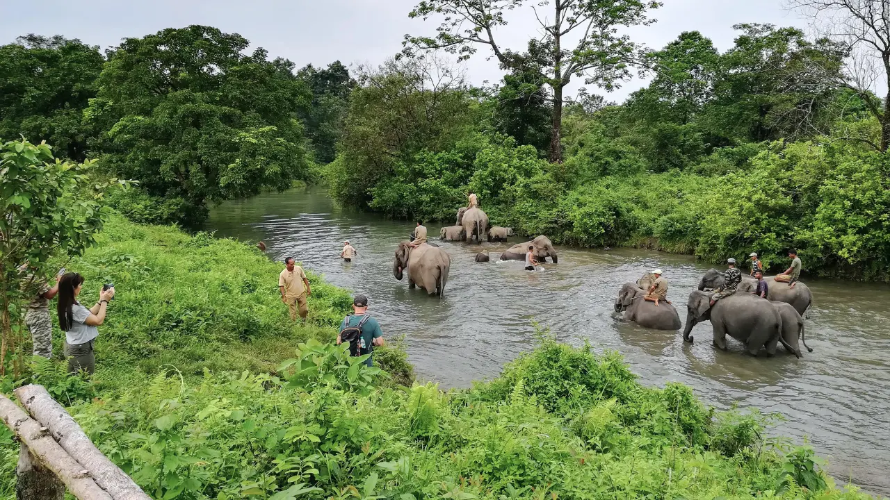
Multi-activityWildlife, cycling, walking, river landscapes, local food and flexible active days.
View tour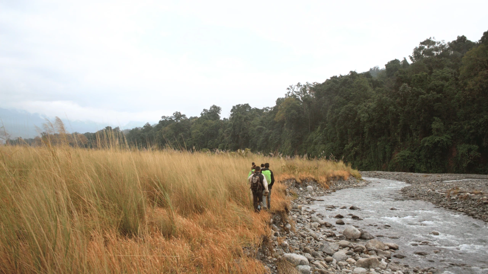
Walks and TreksA walking journey that uses Upper Assam as the gateway into eastern Arunachal's trails and river valleys.
View tour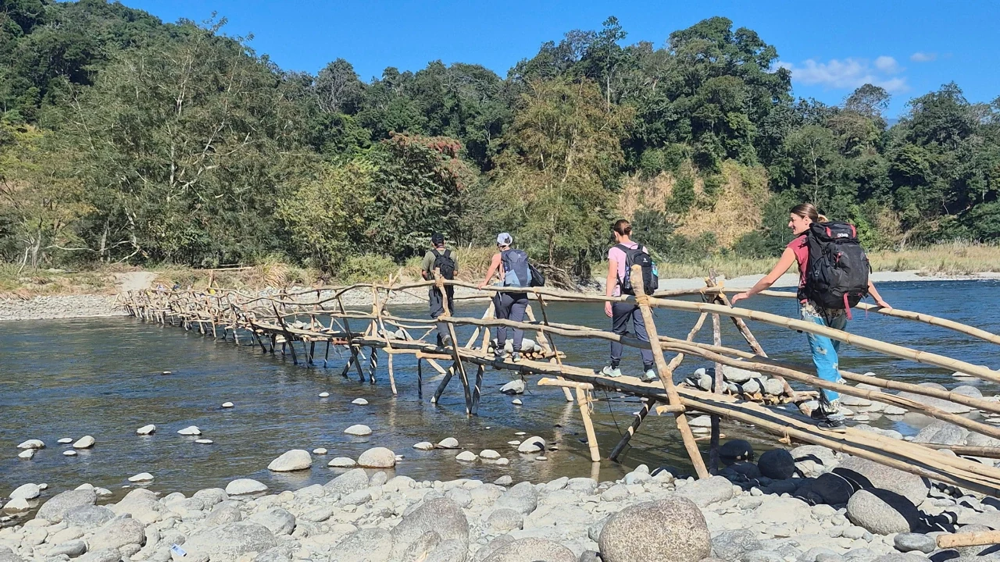
Walks and TreksTrek into Namdapha National Park with Upper Assam as the practical gateway to the rainforest route.
View tourPlan Assam
Use Assam as a standalone destination, or as the gateway into Arunachal Pradesh, Meghalaya and longer multi-state routes.